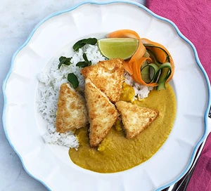

Vegan Katsu Curry

Ingredients
For the Curry
- 2 tbsp rapeseed oil
- 200g cooked rice
- 1/4 large cucumber
- 1 carrot (peeled into ribbons)
- handful of mint or coriander leaves (or both)
- lime wedges (to serve)
For the Sauce
- 1 tbsp rapeseed or vegetable oil
- 1 onion (chopped)
- 1 large carrot (chopped)
- 1 large garlic clove (chopped)
- 2cm ginger piece (peeled & grated or finely chopped)
- 1/4 tbsp curry powder (mild or medium)
- 1/4 tbsp ground tumeric
- 200ml coconut milk
- 2 tsp maple syrup
For the Katsu
- 1 tbsp cornflour
- 280-300g block firm tofu
- 200g dried breadcrumbs (panko or gluten free)
Method
Step 1
Step 2
Step 3
Step 4